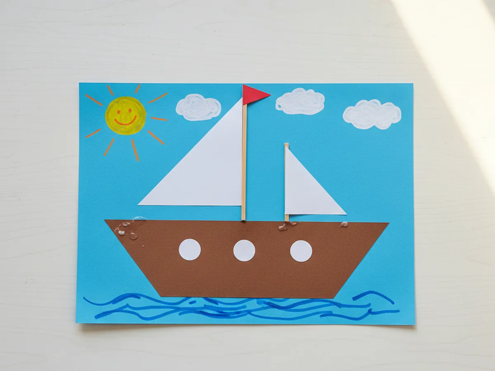
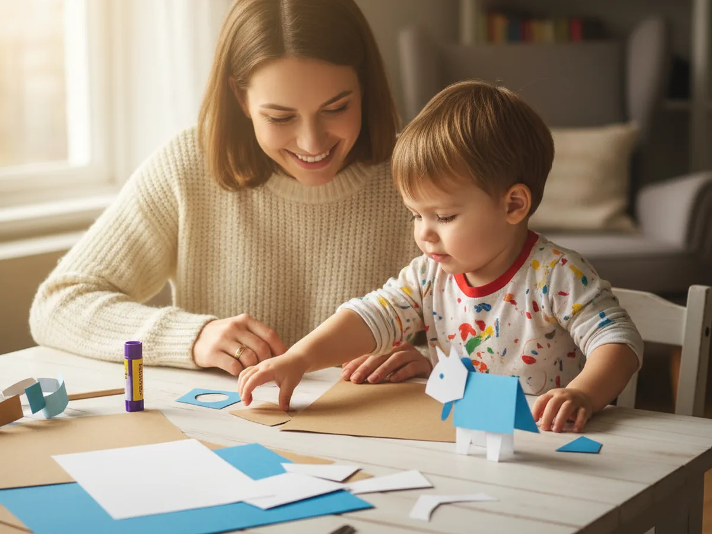
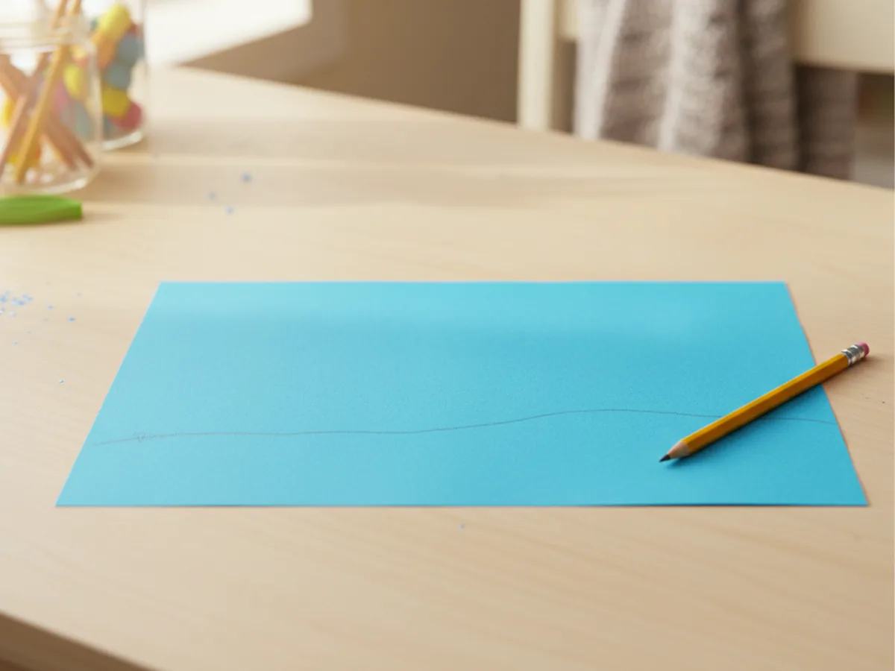
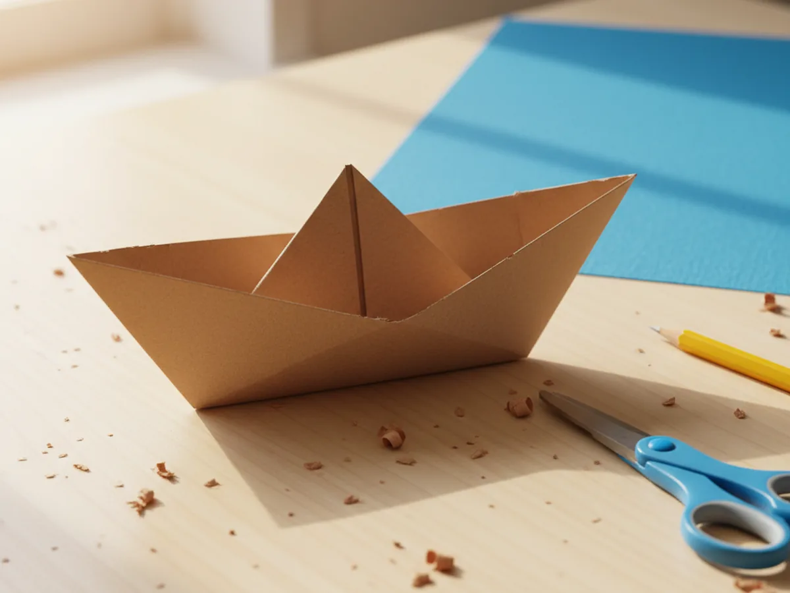
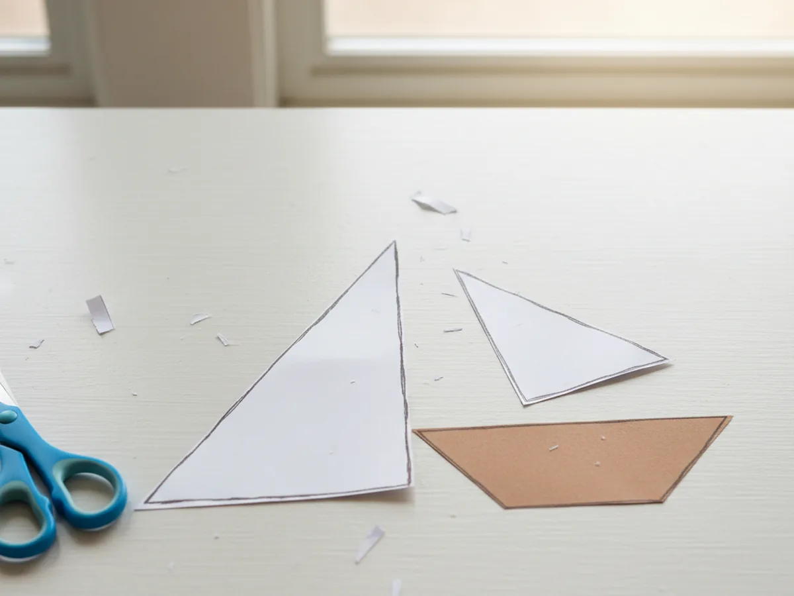
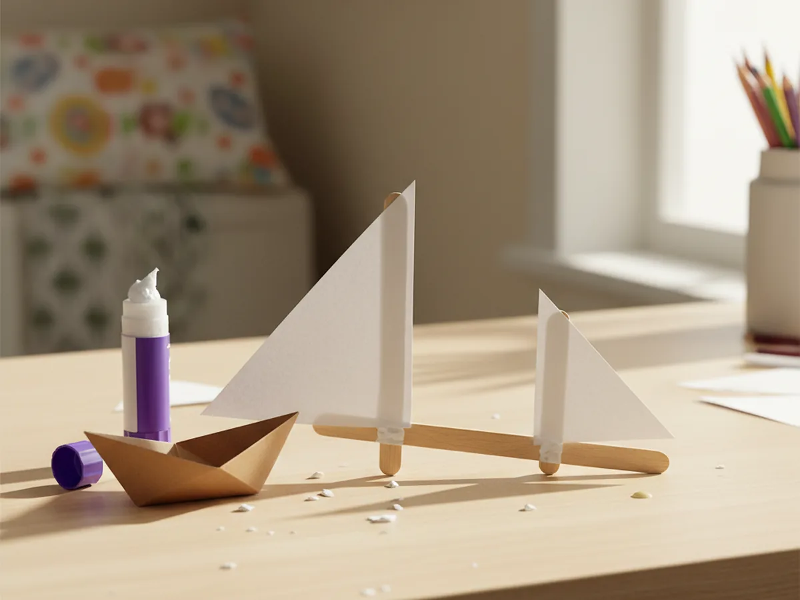
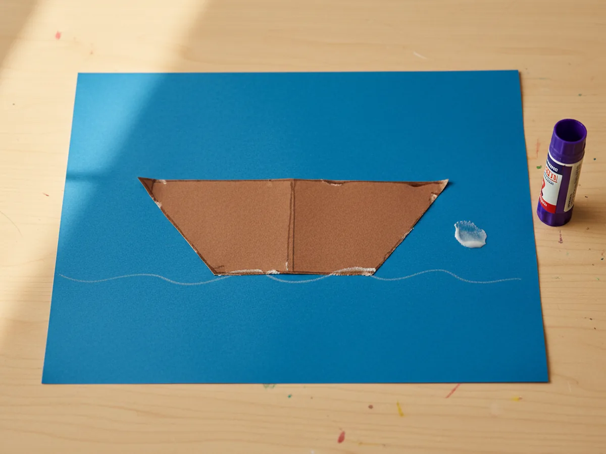
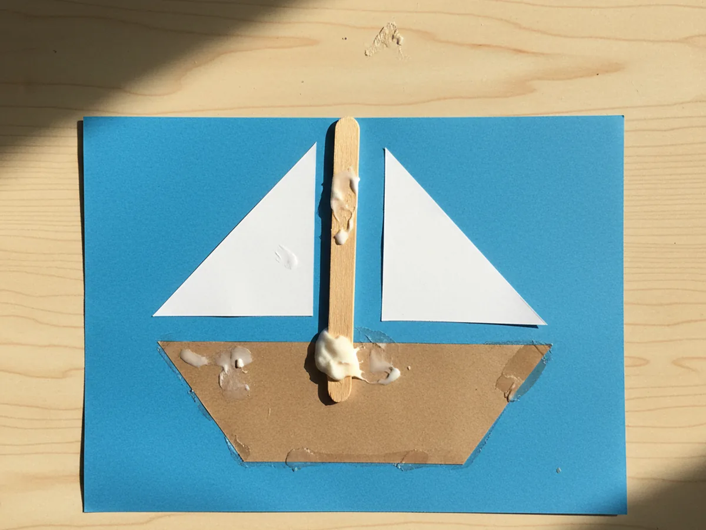
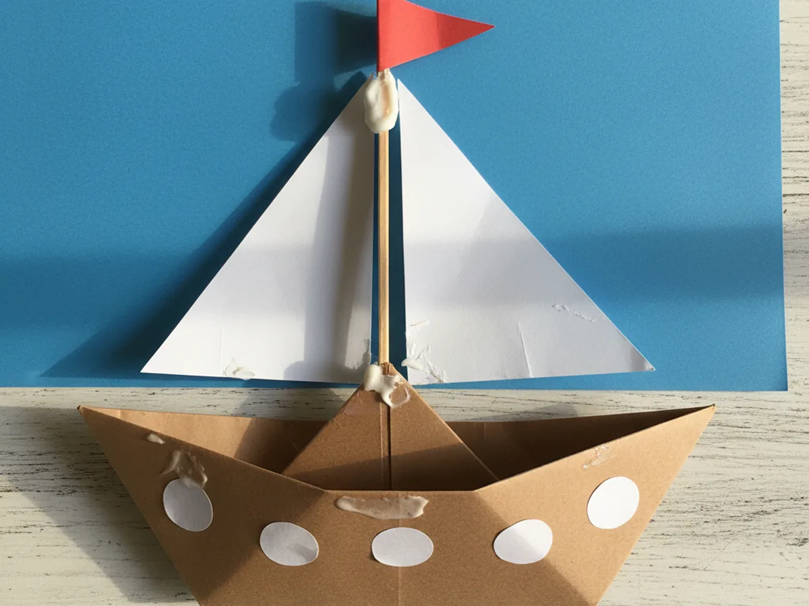
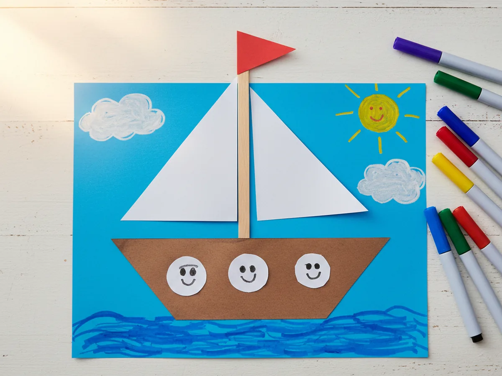

There is something so sweet about a little ship sailing across a piece of blue paper. This paper ship craft is one of those cozy, gentle projects that feels like a small adventure for your child, with a finished result they will proudly want to hang on the fridge. No special skills, no mess, and everything you need is probably already in your craft drawer. ⛵
The whole project takes about 30 minutes from start to finish, including the fun bits where your child decorates the sky and the sea. It is the kind of quiet afternoon activity that turns into big smiles and little stories about where the ship is sailing today.
Why Kids Love This Craft
Ships are a little bit magical to young children. There is something about sails and flags and the idea of setting off to sea that sparks real imagination. This paper ship craft gives kids a chance to build that whole scene with their own hands, from the wavy water to the puffy clouds to the tiny flag at the top of the mast. 🌊
Each step is simple enough that even little hands can do most of it independently. Cutting the hull shape, gluing triangles to the mast, and pressing the ship onto the background all involve the kind of gentle fine motor practice that kids need anyway. And because the craft comes together piece by piece, children get that wonderful feeling of watching something real appear in front of them.
Once the paper ship craft for kids is finished, it often becomes part of a longer pretend-play session. Children love naming their ship, inventing the crew, and making up stories about where it is headed. That gentle shift from crafting to storytelling is exactly the kind of open-ended play that keeps little minds busy in the best way.

What You'll Need
Everything for this paper ship craft comes from a basic craft drawer. Here is the full list of supplies.
- Crayola Construction Paper (240 sheets, assorted colors), blue for the sky and sea, brown for the hull, white for the sails, and red for the flag.
- Horizon Group Wooden Craft Sticks (box of 1000), one natural wood stick makes the perfect sturdy mast.
- Elmer's Washable Glue Sticks (6 count), a glue stick is cleaner than liquid glue and just as strong for paper.
- Fiskars 5" Blunt-Tip Kids Scissors, safe and easy for little hands to manage the cutting.
- Crayola Broad Line Washable Markers (12 count), for drawing waves, clouds, a sun, and fun details around the ship.
- Pencil, for lightly sketching the hull and sail shapes before cutting.
Step-by-Step Instructions
Take your time with these steps and let your child help wherever they can. The paper ship craft comes together naturally as each piece finds its place on the blue background.
Step 1: Prepare the Blue Background
Take a full sheet of blue construction paper and lay it flat on the table in landscape orientation. This will be your sky and sea for the whole paper ship craft. Use a pencil to draw a very light, gently wavy line across the lower third of the paper to mark where the water meets the sky. Do not cut along this line, it just helps guide the placement of the ship later.

Step 2: Cut Out the Hull
From a sheet of brown construction paper, cut out the hull of the ship. The classic shape is a wide trapezoid with a flat bottom and slightly slanted sides, a little like an upside-down shallow bowl. Aim for the hull to be about as wide as the paper you are working on, so the ship fills the scene nicely. If your child is drawing the shape, help them sketch it lightly with a pencil first before cutting.

Step 3: Cut Two White Sails
From white construction paper, cut out two triangles to serve as the sails. Make one larger and one smaller, both right-angled triangles so they can line up neatly along the mast. The larger sail should be tall enough to reach most of the way up the stick, and the smaller one should sit just below or beside it. These two sails are what will give your paper ship that classic, unmistakable silhouette.

Step 4: Glue the Sails to the Craft Stick
Take one wooden craft stick and lay it flat on the table. Spread glue along the straight vertical edge of each white triangle, then press one sail onto each side of the craft stick. The larger sail goes on one side and the smaller sail on the other, with both straight edges lined up along the stick. Let the glue set for a minute so the sails stay firmly attached.

Step 5: Glue the Hull onto the Background
Bring out your blue background paper. Spread glue on the back of the brown hull and press it firmly onto the blue paper, placing it just above the wavy water line you drew earlier. Leave enough room at the top of the hull for the mast to sit nicely in the center. Smooth your hand across the hull to flatten any glue bubbles and help it stick evenly.

Step 6: Attach the Mast to the Hull
Take the craft stick with the sails attached and spread glue along the bottom few inches of the stick. Press the bottom of the mast firmly onto the middle of the brown hull. The mast should stand up straight with the sails rising above it toward the top of the paper. Hold the stick steady for a few seconds while the glue sets so it does not shift sideways.

Step 7: Add the Flag and Portholes
Cut a small red paper triangle to serve as the flag. Spread a little glue on one edge and press it onto the very top of the craft stick so it looks like a cheerful flag flying in the wind. Then cut three small white circles from paper scraps and glue them in a row along the side of the brown hull as round portholes. These tiny details are what make the paper ship craft really start to look like a real ship.

Step 8: Decorate the Scene with Markers
This is the best step. Hand your child a set of washable markers and let them bring the scene to life. Draw wavy lines on the water for movement, a round sun in the top corner, soft clouds across the sky, and even a few birds flying by. Tiny faces peeking out of the portholes are always a favorite. By the end, the paper ship looks like it is genuinely sailing off on an adventure. 🎨

Variations to Try
Pirate Ship Version: Use black construction paper for the hull and add a small skull-and-crossbones drawing on one of the white sails. Swap the red flag for a black pirate flag. This version is great for children a little older who love adventure stories and makes a fun pairing with a read-aloud pirate book.
Cardboard Tube Mast: Instead of a flat craft stick, use a short piece of a paper towel or toilet paper tube as the mast and cut slits near the top to slot the sails in. This turns the paper ship craft into a freestanding three-dimensional project that can actually stand up on a shelf or table.
Sunset Sea Scene: Swap the blue background for a layered sunset sky using orange, pink, and purple construction paper in horizontal strips. Keep the rest of the ship the same. The finished piece looks genuinely striking and introduces kids to the idea of layering colors, a gentle first lesson in paper collage.
Final Thoughts
This paper ship craft is one of those lovely afternoon activities where the whole is so much bigger than the sum of its parts. A few triangles, a stick, some glue, and suddenly you have a whole little scene with a story attached. Your child will beam when it is done, and you will have one of those cozy memories where everyone was just happily focused together. ❤️
Tape the finished ship up somewhere visible so your child can admire their own work. There is real pride in watching a little one point at the fridge and say, "I made that."
More Crafts You'll Love
If your child loved this paper ship craft, these other boat and folding paper projects make wonderful next activities: